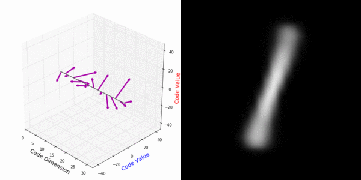
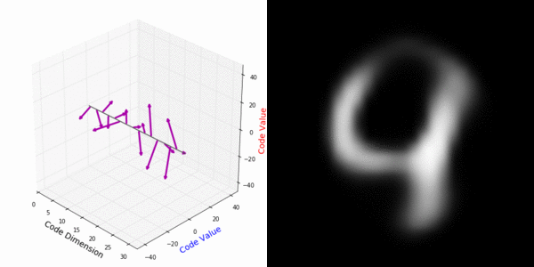
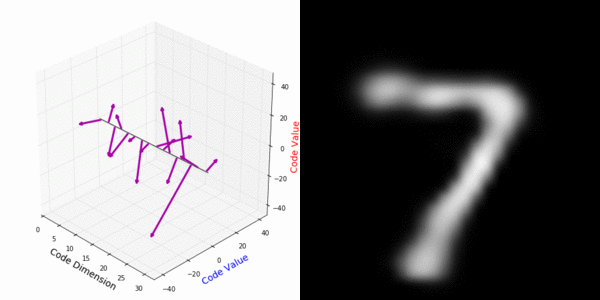

Interpretable Transformations with Encoder-Decoder Networks
University College London
Decoded 1 and latents
Rotating 4 and encoding
Decoded 7 and latents
Abstract Deep feature spaces have the capacity to encode complex transformations of their input data. However, understanding the relative feature-space relationship between two transformed encoded images is difficult. For instance, what is the relative feature space relationship between two rotated images? What is decoded when we interpolate in feature space? Ideally, we want to disentangle confounding factors, such as pose, appearance, and illumination, from object identity. Disentangling these is difficult because they interact in very nonlinear ways. We propose a simple method to construct a deep feature space, with explicitly disentangled representations of several known transformations. A person or algorithm can then manipulate the disentangled representation, for example, to re-render an image with explicit control over parameterized degrees of freedom. The feature space is constructed using a transforming encoder-decoder network with a custom feature transform layer, acting on the hidden representations. We demonstrate the advantages of explicit disentangling on a variety of datasets and transformations, and as an aid for traditional tasks, such as classification.
 Paper - [836 kB]
Paper - [836 kB]
@InProceedings{Worrall_2017_ICCV,
author = {Worrall, Daniel E. and Garbin, Stephan J. and Turmukhambetov, Daniyar and Brostow, Gabriel J.},
title = {Interpretable Transformations With Encoder-Decoder Networks},
booktitle = {The IEEE International Conference on Computer Vision (ICCV)},
month = {Oct},
year = {2017}
}